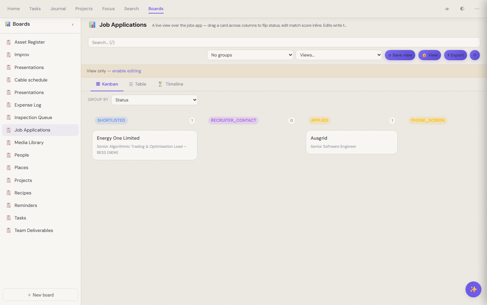
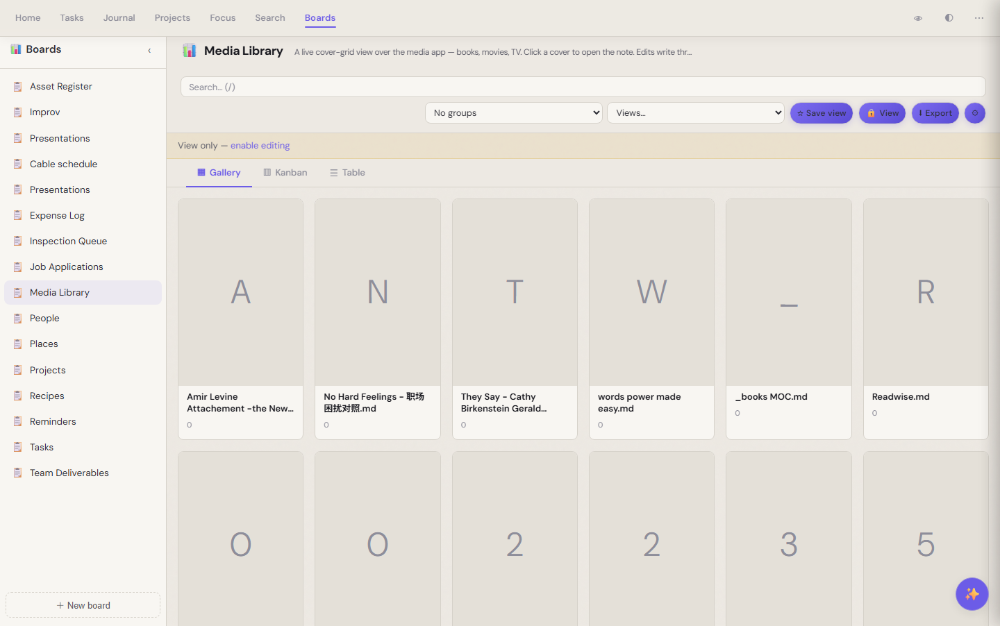
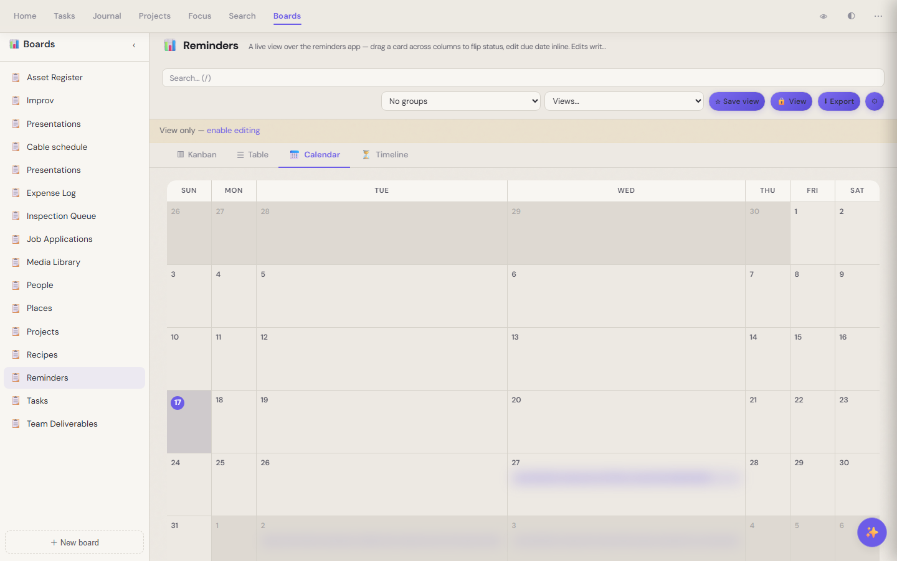

Boards
See your life from any angle.¶
The same notes, rendered five different ways. Job applications as a kanban. Books as a cover grid. Reminders on a calendar. Projects as a timeline. Pick the shape that fits the question you're asking right now.

A job-applications board grouped by status — each card is a markdown note in the vaultA view layer, not a database¶
The boards app doesn't own your data — it just renders it. Your job applications are still markdown files. Your reading list is still markdown files. Boards reads the frontmatter, groups by whatever field you choose, and lets you drag a card across columns or edit a cell inline. The writes flow back to the source notes.
That means: switch publishers, switch editors, walk away from boards entirely — your notes are unchanged.
Sixteen prebuilt boards, twelve apps behind them¶
Out of the box: jobs, books and media, recipes, reminders, projects, tasks, people, places, expenses, presentations, cable schedules, asset registers, team deliverables, an inspection queue. Each one is a thin preset over an app that already owns the data.
Five view shapes¶

Same notes, gallery layout — cover-grid for books and media
Same notes, calendar layout — events plotted by due dateSwitch with one click. The default view is a sensible pick (kanban for status-shaped data, gallery for visual-shaped, table when you need to scan a lot), but every view is one tab away.
What you keep¶
Boards is the lens. Your markdown is the truth. Add a board with a few config lines; the columns are whatever frontmatter fields your notes already carry.